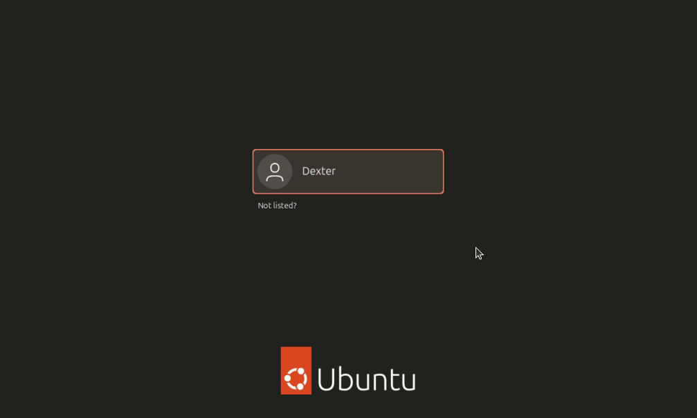
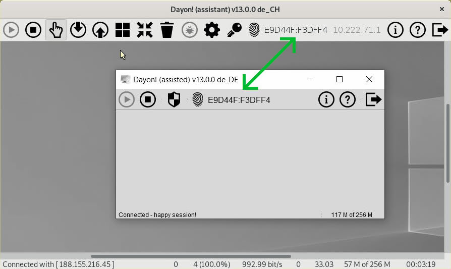

Support
Din feedback är mer än välkommen - posta dina frågor eller öppna ett nytt ärende på GitHub.
Hur anslutningar sker

Wayland
Om Wayland används på hjälptagarens dator, så måste skärmdelning och fjärrstyrning uttryckligen tillåtas av den användaren.
Dialogrutan ”Skärmdelning” visas automatiskt så snart assistenten har upprättat anslutningen.
Den assisterade användaren måste bekräfta delningen; annars kan assistenten inte se eller styra skärmen:

Kända problem med Wayland
Om Dayon! är installerat på den assisterade datorn som ett Snap eller Flatpak, fungerar inte fjärrstyrningen med Wayland – eller åtminstone inte pålitligt.
Lösning
Om möjligt, byt från Wayland-sessionen till Xorg:

Om detta inte är möjligt – vilket till exempel är fallet med Ubuntu version 26.04 och senare – kan Dayon! antingen:
- köras utan installation som AppImage eller självuppackande skript
- eller installeras som tgz eller Debian-paket.
Dayon! Hemmafolder (Home Directory)
Foldern .dayon skapas som standard i den inloggade användarens hemmafolder eller i den folder som anges i JAVA egenskapen (property) user.home. Där sparas användarinställningar och loggfiler.
CRC-checksumma (Bildproblem)
Hjälptagarens skärmbild är nedbruten i många små delar som kallas sektioner. Endast de sektioner som har ändrats sedan den senaste avläsningen av skärmen skickas över till hjälpgivaren. För att avgöra om en sektion har ändrats så använder jag för tillfället en CRC-checksumma (dvs. ett unikt heltal som representerar pixlarna i sektionen). Det är inte en perfekt lösning vad gäller hastighet och det kan hända att några förändrade sektioner inte överförs till hjälpgivaren.
Hittills har problemet endast uppstått för enstaka pixlar under hårda stresstester. Visuellt har jag inte sett något allvarligt, men om allt går knas så kan du pröva att använda funktionen Återställ skärmbild som du hittar vid klick på (papperskorgsknappen). Det borde rensa all data i cachen och överföra en helt ny skärmbild. Annars får du pröva att starta om hjälptagaren.
Fingeravtryck för certifikat
För att förhindra man-in-the-middle attacker, så visas fingeravtrycket för på datorers certifikat. De två fingeravtrycken måste matcha - annars är det något skumt som pågår. Denna säkerhetsfunktion las till i och med version 13 av Dayon!.

Varning: För att möjliggöra anslutningsmöjlighet till gamla versioner (före version 13) , så måste Kompatibelt läge  vara aktiverat.
vara aktiverat.
Detta är endast en tillfällig lösning, uppdatera dina klientinstallationer så snart som möjligt.